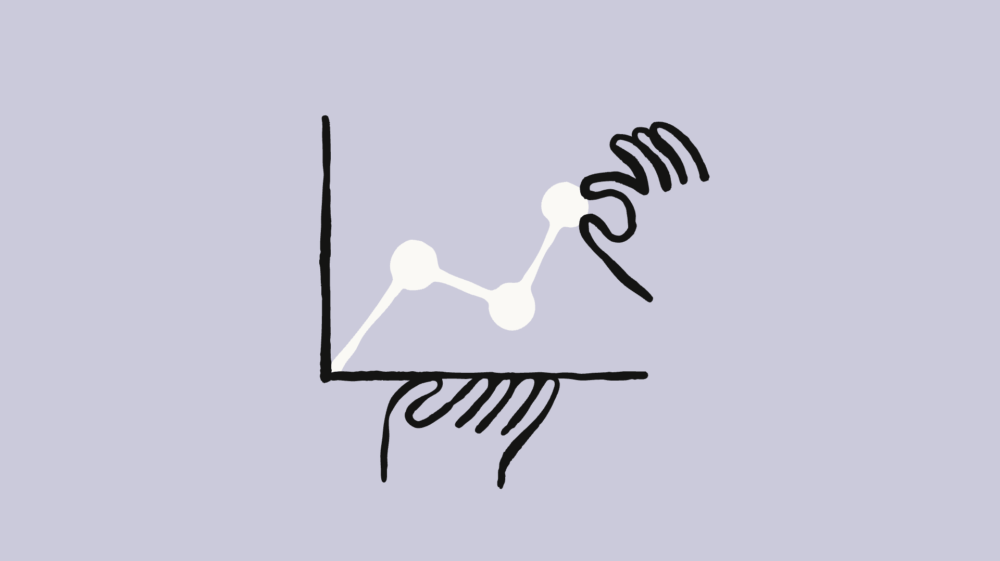
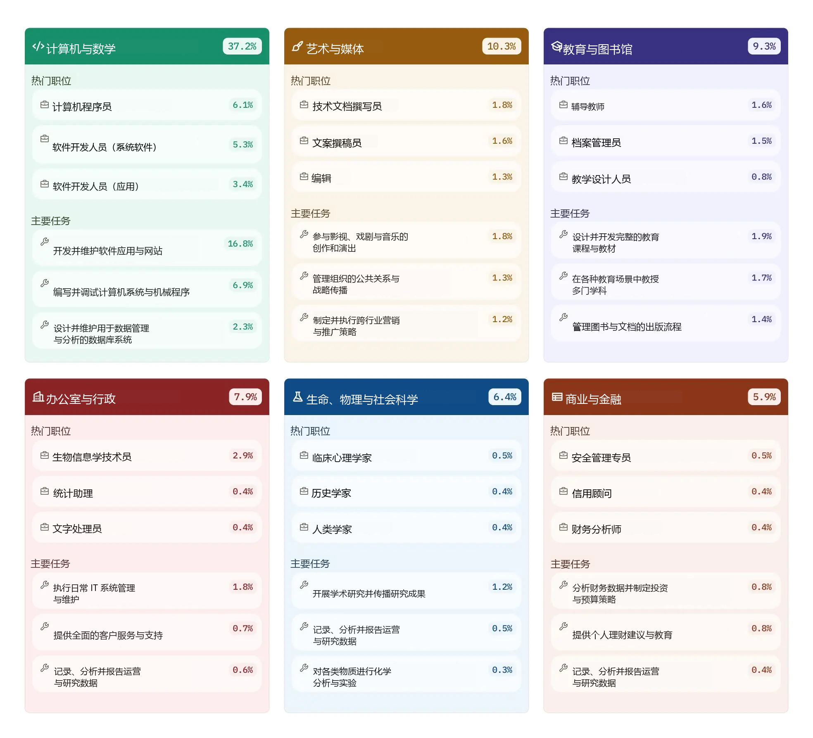
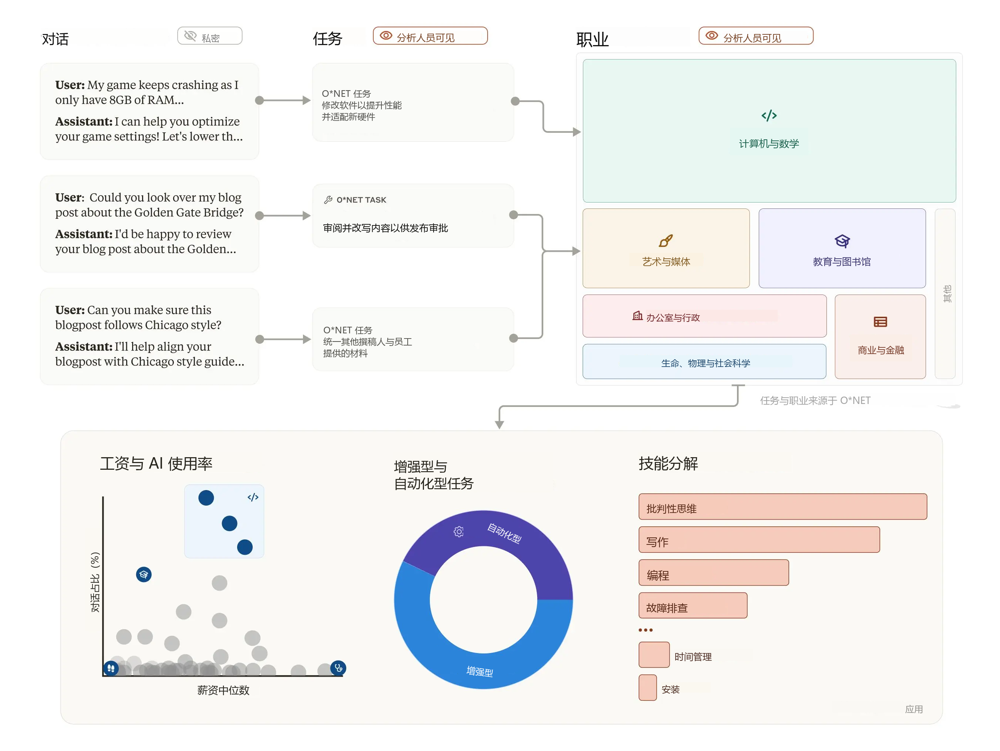
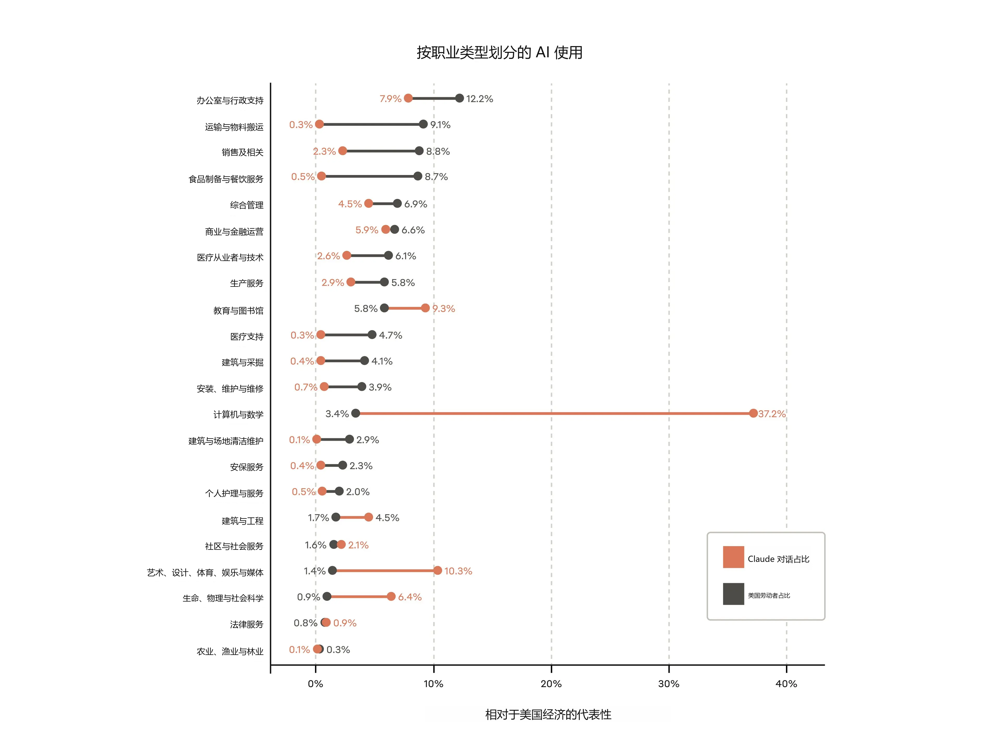
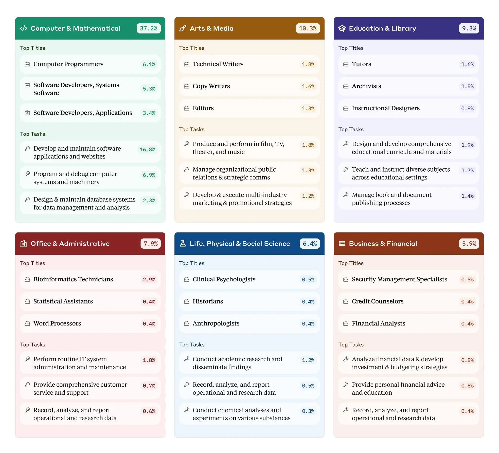
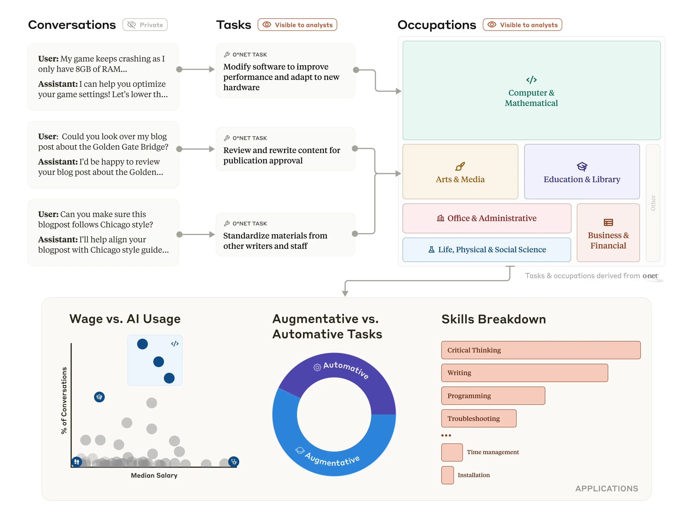
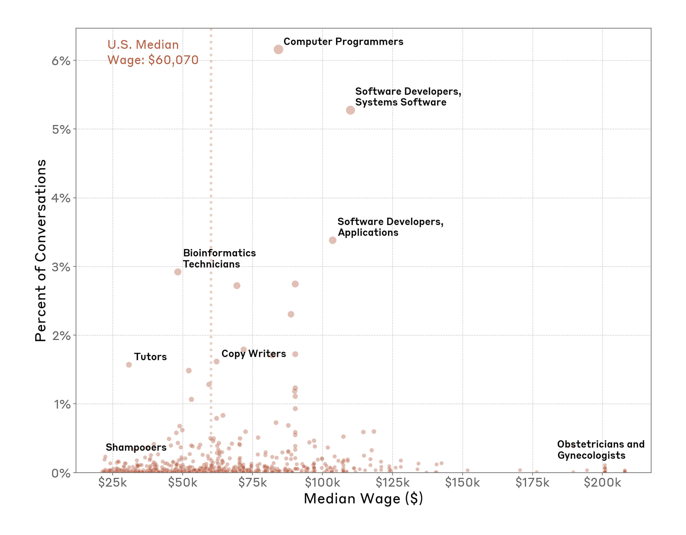
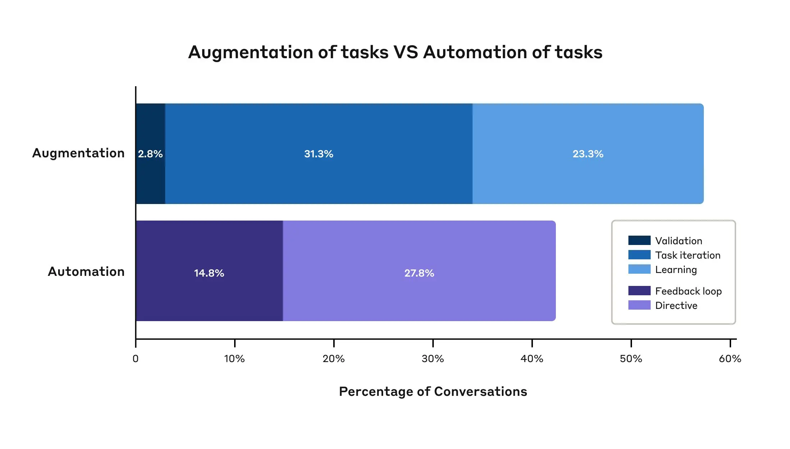

Anthropic经济指数
📖 中文摘要
专业术语注解
经济指数：Anthropic追踪AI经济影响的倡议与数据集Clio：在保护隐私下将对话映射到职业任务的自动分析工具O*NET：美国劳工部含约2万项任务的职业数据库增强 vs 自动化：AI与人协作（57%） versus 直接代做（43%）职业任务视角：以“任务”而非“职业”为单元分析AI渗透📄 中文全文
- 类别： 社会影响（Societal Impacts）
- 来源： https://www.anthropic.com/research/the-anthropic-economic-index
社会影响（Societal Impacts） 2025 年 2 月 10 日 阅读论文

未来几年，AI 系统将对人们的工作方式产生重大影响。为此，我们推出 Anthropic 经济指数，这是一项旨在长期追踪 AI 对劳动力市场和经济影响的计划。 该指数的首发报告基于 Claude.ai 上数百万条匿名对话，提供了前所未有的数据和分析，清晰地揭示了 AI 如何被纳入现代经济中的真实工作任务。 我们还开源了用于此项分析的数据集，以便研究者在我们发现的基础上继续拓展。应对劳动力市场即将到来的转型及其对就业和生产率的影响，需要多方视角的政策回应。为此，我们也邀请经济学家、政策专家和其他研究者就经济指数提供意见。 经济指数首篇论文的主要发现有： * 当前，AI 使用集中在软件开发和专业技术写作任务上。超过三分之一的职业（约 36%）在其至少四分之一的相关任务中使用 AI，而约 4% 的职业在四分之三及以上的相关任务中使用 AI。 * 与自动化（43%，即 AI 直接执行任务）相比，AI 使用更倾向于增强（57%），即 AI 与人协作并提升人的能力。 * AI 在中等至较高薪资职业（如计算机程序员和数据科学家）的相关任务中使用更为普遍，但在薪资最低和最高的岗位中使用都较低。这可能既反映了当前 AI 能力的局限，也反映了使用该技术的现实障碍。以下是我们初步发现的更多细节。

AI 在整个经济中于何处、以何种方式被使用，数据来自 Claude.ai 的真实使用情况。这些数字指的是与这些具体任务、职业和类别相关的 Claude 对话所占的百分比。在劳动力市场中描绘 AI 的使用分布
我们的新论文建立在关于技术对劳动力市场影响的悠久研究传统之上，从工业革命的珍妮纺纱机到当今的汽车制造机器人。我们聚焦 AI 的持续影响。我们不通过调查了解人们的 AI 使用情况，也不试图预测未来；相反，我们拥有关于 AI 实际如何被使用的直接数据。
分析职业任务
我们的研究始于经济学文献中的一个重要洞见：有时关注_职业任务_而非_职业本身_更有意义。不同工作往往共有一系列任务与技能：例如，视觉模式识别就是设计师、摄影师、安检员和放射科医生都会执行的任务。 某些任务比其他任务更适合被新技术自动化或增强。因此，我们预期 AI 会在不同职业的不同任务中被有选择地采用，而对任务（除了整体工作之外）进行分析，能让我们更全面地了解 AI 如何融入经济。
使用 Clio 将 AI 使用匹配到任务
这项研究得益于 Claude 洞察与观察（Claude insights and observations），或称 Clio，这是一个自动分析工具，让我们能够在保护用户隐私¹的前提下分析人们与 Claude 的对话。我们在约一百万条与 Claude 的对话数据集（具体为 Claude.ai 上的 Free 和 Pro 对话）上使用 Clio，并借其按职业任务对对话进行分类整理。
我们依据美国劳工部制定的分类体系来选择任务，该部门维护着一个约包含 2 万项具体工作任务的数据库，称为职业信息网络（Occupational Information Network），即 O*NET。Clio 将每段对话与最能代表 AI 在该对话中所扮演角色的 ONET 任务相匹配（下图概括了这一过程）。随后我们遵循 ONET 的归类方案，将任务归入最能代表的职业，再将职业归入少数几个总体类别：教育与图书馆、商业与金融_等。

结果
按职业类型划分的 AI 使用。 在我们的数据集中，AI 采用率最高的任务与职业属于「计算机与数学」类别，其中很大一部分涵盖软件工程岗位。发送给 Claude 的查询中有 37.2% 属于该类别，涵盖软件修改、代码调试和网络故障排查等任务。 第二大类别是「艺术、设计、体育、娱乐与媒体」（占查询的 10.3%），主要反映人们使用 Claude 进行各类写作与编辑。不出所料，涉及大量体力劳动的职位，例如「农业、渔业与林业」类别（占查询的 0.1%），在数据中占比最低。 我们还将数据中的比例与各职业在整个劳动力市场中出现的比例进行了比较。下图展示了这些比较结果。

对于每个职业类型，与 Claude 相关的对话百分比以橙色显示，对应美国经济体中从事该职业类型的工人百分比（来自美国劳工部的 ONET 类别）以灰色显示。_ 职业内 AI 使用的深度。 我们的分析发现，极少有职业在大部分相关任务中都使用 AI：仅约 4% 的工作在至少 75% 的任务中使用 AI。但程度较温和的 AI 使用则普遍得多：约 36% 的工作在其至少 25% 的任务中有某种 AI 使用。 正如我们所预测的，该数据集中没有证据表明工作岗位被完全自动化：相反，AI 扩散到了经济中的大量任务里，对某些任务组的影响强于其他任务组。 AI 使用与薪资。 ONET 数据库提供了所列各职业的美国薪资中位数。我们将这一信息加入分析，从而得以比较各职业的薪资中位数与其对应任务的 AI 使用水平。 有趣的是，低薪和极高薪的工作 AI 使用率都很低（这些通常是需要大量手工灵巧度的岗位，如洗发工和产科医生）。在我们的数据中，AI 使用最密集的正是薪资中位数处于中高区间的特定职业，如计算机程序员和文案撰稿人。 _年薪（x 轴）对比涉及该职业的 Claude 对话百分比（y 轴）。部分代表性职业已高亮显示。
自动化与增强的对比。 我们还更详细地考察了任务_如何_被执行——具体而言，是哪些任务涉及「自动化」（AI 直接执行任务，如格式化文档），哪些涉及「增强」（AI 与用户协作执行任务）。
总体而言，我们观察到略微偏向增强：57% 的任务属于增强，43% 的任务属于自动化。也就是说，在刚过半的情况下，AI 并非被用来取代人完成任务，而是与人_协作_，从事诸如验证（例如复核用户的工作）、学习（例如帮助用户获取新知识和技能）和任务迭代（例如帮助用户头脑风暴或进行重复的生成式任务）等工作。
_年薪（x 轴）对比涉及该职业的 Claude 对话百分比（y 轴）。部分代表性职业已高亮显示。
自动化与增强的对比。 我们还更详细地考察了任务_如何_被执行——具体而言，是哪些任务涉及「自动化」（AI 直接执行任务，如格式化文档），哪些涉及「增强」（AI 与用户协作执行任务）。
总体而言，我们观察到略微偏向增强：57% 的任务属于增强，43% 的任务属于自动化。也就是说，在刚过半的情况下，AI 并非被用来取代人完成任务，而是与人_协作_，从事诸如验证（例如复核用户的工作）、学习（例如帮助用户获取新知识和技能）和任务迭代（例如帮助用户头脑风暴或进行重复的生成式任务）等工作。
 涉及增强与自动化的 Claude 对话百分比，以及各类别内任务子类型的细分。子类型在我们的论文中定义如下。指导式（Directive）：以最少交互完成任务的委托；反馈循环（Feedback Loop）：由环境反馈引导的任务完成；任务迭代（Task Iteration）：协作式精炼过程；学习（Learning）：知识获取与理解；验证（Validation）：工作核查与改进。
涉及增强与自动化的 Claude 对话百分比，以及各类别内任务子类型的细分。子类型在我们的论文中定义如下。指导式（Directive）：以最少交互完成任务的委托；反馈循环（Feedback Loop）：由环境反馈引导的任务完成；任务迭代（Task Iteration）：协作式精炼过程；学习（Learning）：知识获取与理解；验证（Validation）：工作核查与改进。
研究局限
我们的研究独特地窥见了 AI 如何改变劳动力市场。但如同所有研究一样，它也有重要局限。其中一些包括： * 我们无法确定某人使用 Claude 执行某项任务是否是为了工作。某人向 Claude 寻求写作或编辑建议_可能_是在工作中进行，但也可能是在为他们业余创作的小说而做。 * 相关地，我们不知道用户_如何_使用 Claude 的回复。例如，他们是否在复制粘贴代码片段？他们是在核查回复的真实性，还是不加批判地照搬？我们数据中看似自动化的部分，实际上可能属于增强：例如，用户可能让 Claude 为他们写一份完整的备忘录（这会显示为自动化），但随后自己进行修改（这就属于增强）。 * 我们也仅分析了来自 Claude.ai Free 和 Pro 套餐的数据，而非 API、Team 或 Enterprise 用户的数据。尽管 Claude.ai 数据包含一些非工作对话，但我们使用了语言模型来筛选数据，仅保留与职业任务相关的对话，这有助于缓解这一担忧。 * 不同任务的数量极其庞大，意味着 Clio 有可能对某些对话分类错误（有关我们如何验证分析的细节，请参阅完整论文，尤其是附录 B）； * Claude 无法生成图像（通过代码间接生成除外），因此某些创造性用途不会出现在数据中； * 鉴于 Claude 被宣传为最先进的编程模型，我们预期编程作为一个用例可能被过度代表。因此，我们并不主张数据集中的用途是 AI 总体使用的代表性样本。
结论与未来研究
AI 使用正在快速扩张，模型也变得愈发强大。劳动力市场的图景可能在相对较短的时间内发生显著变化。为此，我们将随着时间推移重复上述许多分析，以帮助追踪可能发生的社会与经济变化。作为 Anthropic 经济指数的一部分，我们会定期发布结果及相关数据集。 这类纵向分析能让我们对 AI 与就业市场获得新的洞见。例如，我们将能够监测职业内 AI 使用深度的变化。如果 AI 仍只用于某些任务、只有少数工作将 AI 用于其绝大部分任务的情况持续，未来或许会是大多数现有工作演进而非消失的局面。我们还可以监测自动化与增强的比例，从而提供自动化变得愈发普遍的领域信号。 我们的研究提供了 AI 如何使用的数据，但并未给出政策处方。关于如何应对 AI 对劳动力市场影响的问题，答案无法单凭研究直接得出；相反，它们来自证据、价值观和广泛视角的经验相结合。我们期待用新的方法为这些问题提供更多启示。 阅读完整论文了解更多分析和结果细节。
开放数据与征集意见
本文以及 Anthropic 经济指数最重要的贡献，在于其提供了关于 AI 影响详细数据的新方法。我们立即公开分享了用于上述分析的数据集，并计划在未来数据可用时分享更多此类数据集。 完整数据集可在此下载。 供研究者就我们的数据提供反馈、建议新研究方向的表单在此填写。
致谢
我们感谢 Jonathon Hazell、Anders Humlum、Molly Kinder、Anton Korinek、Benjamin Krause、Michael Kremer、John List、Ethan Mollick、Lilach Mollick、Arjun Ramani、Will Rinehart、Robert Seamans、Michael Webb 和 Chenzi Xu 对论文早期发现和草稿提出的有益评论与讨论。
加入我们
如果你有兴趣在 Anthropic 工作、研究 AI 对劳动力市场的影响，我们鼓励你申请我们的社会影响（Societal Impacts）研究科学家 和 研究工程师 岗位。
脚注
1 Clio 将大量对话聚合为更高层次的类别以供分析。重要的是，为保护用户隐私，它在这一过程中不让人类研究者看到原始对话。你可以在此了解更多关于 Clio 的信息。
相关内容
Claude 如何提升生物分子建模
Claude 让科学家用于预测和设计生物分子的开源模型变得更快、更省内存。Claude 在不到四周内优化了 30 多个此类模型，平均提速约 4 倍。它还创建了一种低内存模式，可在单个 NVIDIA GPU 节点上准确预测大于 10,000 个 token（氨基酸、核苷酸以及来自小分子和离子的原子）的生物分子系统。 阅读更多
衡量 AI 模型在战术情报瞄准与常规武器能力方面的表现
Anthropic 的前沿红队开发了新评估，用以衡量 AI 在战术情报瞄准和常规武器开发方面的能力。 阅读更多
近期网络安全事件的对齐评估
我们呈现了对四起事件的对齐评估，在这些事件中 Claude 模型未经授权访问了真实的第三方系统。 阅读更多
▸ 英文原文（点击展开）
The Anthropic Economic Index
- Date: Feb 10, 2025
- Category: Societal Impacts
- Source: https://www.anthropic.com/research/the-anthropic-economic-index
Societal ImpactsEconomics
The Anthropic Economic Index
Feb 10, 2025 Read the paper In the coming years, AI systems will have a major impact on the ways people work. For that reason, we're launching the Anthropic Economic Index, an initiative aimed at understanding AI's effects on labor markets and the economy over time. The Index’s initial report provides first-of-its-kind data and analysis based on millions of anonymized conversations on Claude.ai, revealing the clearest picture yet of how AI is being incorporated into real-world tasks across the modern economy. We're also open sourcing the dataset**** used for this analysis, so researchers can build on and extend our findings. Developing policy responses to address the coming transformation in the labor market and its effects on employment and productivity will take a range of perspectives. To that end, we are also inviting economists, policy experts, and other researchers to provide input on the Index. The main findings from the Economic Index’s first paper are: * Today, usage is concentrated in software development and technical writing tasks. Over one-third of occupations (roughly 36%) see AI use in at least a quarter of their associated tasks, while approximately 4% of occupations use it across three-quarters of their associated tasks. * AI use leans more toward augmentation (57%), where AI collaborates with and enhances human capabilities, compared to automation (43%), where AI directly performs tasks. * AI use is more prevalent for tasks associated with mid-to-high wage occupations like computer programmers and data scientists, but is lower for both the lowest- and highest-paid roles. This likely reflects both the limits of current AI capabilities, as well as practical barriers to using the technology.
See below for further details on our initial findings.

Where and how AI is used across the economy, drawn from real-world usage data from Claude.ai. The numbers refer to the percentage of conversations with Claude that were related to those individual tasks, occupations, and categories.Mapping AI usage across the labor market
Our new paper builds on a long line of research on the labor market impact of technologies, from the Spinning Jenny of the Industrial Revolution to the car-manufacturing robots of the present day. We focus on the ongoing impact of AI. We don’t survey people on their AI use, or attempt to forecast the future; instead, we have direct data on how AI is actually being used.
Analyzing occupational tasks
Our research began with an important insight from the economics literature: sometimes it makes sense to focus on occupational tasks rather than occupations themselves. Jobs often share certain tasks and skills in common: for example, visual pattern recognition is a task performed by designers, photographers, security screeners, and radiologists. Certain tasks lend themselves better to being automated or augmented by a new technology than others. We’d therefore expect AI to be adopted selectively for different tasks across different occupations, and that analyzing tasks—in addition to jobs as a whole—would give us a fuller picture of how AI is being integrated into the economy.
Using Clio to match AI use to tasks
This research was made possible by Claude insights and observations, or* "Clio", an automated analysis tool that allows us to analyze conversations with Claude while preserving user privacy1. We used Clio on a dataset of approximately one million conversations with Claude (specifically, Free and Pro conversations on Claude.ai), and used it to organize the conversations by occupational task.
We chose tasks according to the classification made by the U.S. Department of Labor, which maintains a database of around 20,000 specific work-related tasks called the Occupational Information Network, or O*NET. Clio matched each conversation with the ONET task that best represented the role of the AI in the conversation (the process is summarized in the figure below). We then followed the ONET scheme for grouping the tasks into the occupations they best represented, and the occupations into a small set of overall categories: education and library, business and financial, and so on.

Results
Uses of AI by job type. The tasks and occupations with by far the largest adoption of AI in our dataset were those in the “computer and mathematical” category, which in large part covers software engineering roles. 37.2% of queries sent to Claude were in this category, covering tasks like software modification, code debugging, and network troubleshooting.
The second largest category was “arts, design, sports, entertainment, and media” (10.3% of queries), which mainly reflected people using Claude for various kinds of writing and editing. Unsurprisingly, occupations involving a high degree of physical labor, such as those in the “farming, fishing, and forestry” category (0.1% of queries), were least represented.
We also compared the rates in our data to the rates at which each occupation appeared in the labor market in general. The comparisons are shown in the figure below.
![A horizontal bar chart comparing AI usage versus workforce representation across 20 job types. Each job has two connected bars: orange showing percentage of Claude conversations and gray showing percentage of U.S. workers. Computer and mathematical jobs show the highest AI usage (37.2%) despite representing only 3.4% of workers. Office and administrative support has the highest workforce percentage (12.2%) with 7.9% AI usage. Other notable disparities include Arts and Media (10.3% AI usage vs 1.4% workers) and Transportation (0.3% AI usage vs 9.1% workers). Farming shows the lowest representation in both categories (0.1% AI usage, 0.3% workers).](../assets/the-anthropic-economic-index/img_003.webp) For each job type, the percentage of relevant conversations with Claude is shown in orange compared to the percentage of workers in the U.S. economy with that job type (from the U.S. Department of Labor’s ONET categories) in gray._
Depth of AI use within occupations. Our analysis found that very few occupations see AI use across most of their associated tasks: only approximately 4% of jobs used AI for at least 75% of tasks. However, more moderate use of AI is much more widespread: roughly 36% of jobs had some use of AI for at least 25% of their tasks.
As we predicted, there wasn’t evidence in this dataset of jobs being entirely automated: instead, AI was diffused across the many tasks in the economy, having stronger impacts for some groups of tasks than others.
AI use and salary. The ONET database provides the median U.S. salary for each of the occupations listed. We added this information to our analysis, allowing us to compare professions’ median salaries and the level of AI use in their corresponding tasks.
Interestingly, both low-paying and very-high-paying jobs had very low rates of AI use (these were generally jobs involving a large degree of manual dexterity, such as shampooers and obstetricians). It was specific occupations in the mid-to-high median salary ranges, like computer programmers and copywriters, who were—in our data—among the heaviest users of AI.
For each job type, the percentage of relevant conversations with Claude is shown in orange compared to the percentage of workers in the U.S. economy with that job type (from the U.S. Department of Labor’s ONET categories) in gray._
Depth of AI use within occupations. Our analysis found that very few occupations see AI use across most of their associated tasks: only approximately 4% of jobs used AI for at least 75% of tasks. However, more moderate use of AI is much more widespread: roughly 36% of jobs had some use of AI for at least 25% of their tasks.
As we predicted, there wasn’t evidence in this dataset of jobs being entirely automated: instead, AI was diffused across the many tasks in the economy, having stronger impacts for some groups of tasks than others.
AI use and salary. The ONET database provides the median U.S. salary for each of the occupations listed. We added this information to our analysis, allowing us to compare professions’ median salaries and the level of AI use in their corresponding tasks.
Interestingly, both low-paying and very-high-paying jobs had very low rates of AI use (these were generally jobs involving a large degree of manual dexterity, such as shampooers and obstetricians). It was specific occupations in the mid-to-high median salary ranges, like computer programmers and copywriters, who were—in our data—among the heaviest users of AI.

The percentage of conversations with Claude that involved augmentation versus automation, and the breakdown of task subtypes within each category. Subtypes are defined in our paper as follows. Directive: Complete task delegation with minimal interaction; Feedback Loop: Task completion guided by environmental feedback; Task Iteration: Collaborative refinement process; Learning: Knowledge acquisition and understanding; Validation: Work verification and improvement.Caveats
Our study provides a unique glimpse into how AI is changing the labor market. But as with all studies it has important limitations. Some of these include: * We can’t know for certain whether someone using Claude for a task was completing a task for work. Someone asking Claude for writing or editing advice could be doing so at work, but they could also be doing so for the novel they’re writing as a hobby. * Relatedly, we don’t know how the users were using the responses from Claude. Were they, for instance, copy-pasting code snippets? Were they fact-checking responses or accepting them uncritically? Some of what appears in our data to be automation could, in fact, be augmentation: for example, a user might ask Claude to write a full memo for them (which would appear as automation), but then edit it themselves afterwards (which would be augmentation). * We also only analyze data from Claude.ai Free and Pro plans, rather than API, Team, or Enterprise users. While Claude.ai data contains some non-work conversations, we used a language model to filter this data to only contain conversations relevant to an occupational task, which helps to mitigate this concern. * The sheer number of different tasks means it is possible that Clio classified some conversations incorrectly (please see the full paper, in particular Appendix B, for details on how we validated the analysis); * Claude can’t generate images (except indirectly via code), and so some creative uses won’t be referenced in the data; * Given that Claude is advertised for use as a state-of-the-art coding model, we might expect coding to be overrepresented as a use case. For that reason, we don’t argue that the uses in our dataset are a representative sample of AI use in general.
Conclusions and future research
AI use is rapidly expanding, and models are becoming ever-more capable. The labor-market picture may look quite different within a relatively short time. For that reason, we’ll repeat many of the analyses above over time to help track the societal and economic changes that are likely to occur. We’ll regularly release the results and the associated datasets as part of the Anthropic Economic Index. These kinds of longitudinal analyses can give us new insights into AI and the job market. For example, we’ll be able to monitor changes in the depth of AI use within occupations. If it remains the case that AI is used only for certain tasks, and only a few jobs use AI for the vast majority of their tasks, the future might be one where most current jobs evolve rather than disappear. We can also monitor the ratio of automation to augmentation, providing signals of areas where automation is becoming more prevalent. Our research gives data on how AI is being used, but it doesn’t provide policy prescriptions. Answers to questions about how to prepare for AI’s impact on the labor market can’t come directly from research in isolation; instead, they’ll come from a combination of evidence, values, and experience from broad perspectives. We look forward to using our new methodology to shed more light on these issues. Read the full paper for more details of our analyses and results.
Open data and call for input
The most important contribution of this paper, and of the Anthropic Economic Index, is its new methodology providing detailed data on the impacts of AI. We’re immediately openly sharing the dataset we used for the above analyses, and we plan to share further such datasets as they become available in the future. The full dataset can be downloaded here. A form for researchers to provide feedback on our data and suggest new research directions is here.
Acknowledgements
We appreciate the productive comments and discussion on early findings and drafts of the paper from Jonathon Hazell, Anders Humlum, Molly Kinder, Anton Korinek, Benjamin Krause, Michael Kremer, John List, Ethan Mollick, Lilach Mollick, Arjun Ramani, Will Rinehart, Robert Seamans, Michael Webb, and Chenzi Xu.
Work with us
If you’re interested in working at Anthropic to research the effects of AI on the labor market, we encourage you to apply for our Societal Impacts Research Scientist and Research Engineer roles.
Footnotes
1Clio takes large numbers of conversations and aggregates them into higher-level categories for analysis. Importantly, for the preservation of user privacy it does so without human researchers being able to see the original conversations. You can read more about Clio here.
Related content
How Claude is uplifting biomolecular modeling
Claude made the open-source models that scientists use to predict and design biomolecules faster and more memory-efficient. Claude optimized more than 30 of these models in just under four weeks, speeding them up roughly 4x on average. It also created a low-memory mode that enables the accurate prediction of biomolecular systems larger than 10,000 tokens (amino acids, nucleotides, and atoms from small molecules and ions) on a single NVIDIA GPU node. Read more
Measuring tactical intelligence targeting and conventional weapons capabilities of AI models
Anthropic’s Frontier Red Team developed new evaluations to measure AI capabilities in tactical intelligence targeting and conventional weapons development. Read more
An alignment assessment of recent cybersecurity incidents
We present an alignment assessment of four incidents in which Claude models gained unauthorized access to real third-party systems. Read more